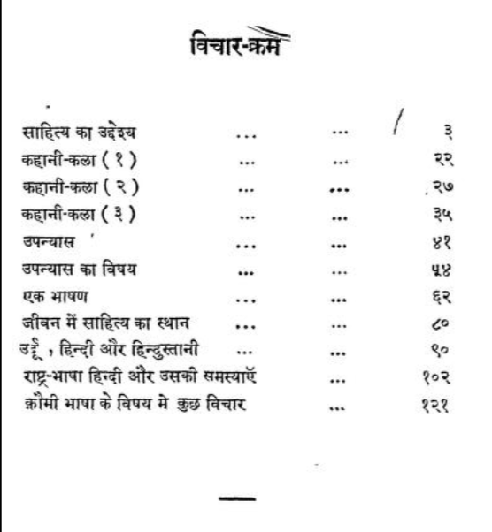

translation: Even though we eat wheat from Australia, drink tea from China and travel in cars from America, we are completely unfamiliar with the people who create these items. But by reading the stories of Maupassant, Anatole France, Chekhov and Tolstoy, we have established a spiritual connection with France and Russia. Our sphere of acquaintance has expanded beyond oceans, islands and mountains to France and Russia. We start seeing the light of our own soul there as well. The farmers, workers and students there seem to us as if we have a close acquaintance with them.
📜 When Premchand spoke to the writers directly
Premchand gave several speeches to writers in India during his lifetime. He spoke on the purpose of literature, the craft of writing, and the politics of language, particularly Hindi and Urdu. These speeches are collected in a Hindi book titled कुछ विचार (Kuch Vichar). You can read the original Hindi book here: archive.org - Kuch Vichar by Premchand 📘

Table of Contents from the book of speeches📄 I have completed a literal translation of this book of speeches into English. It is now available as a free downloadable PDF.
⬇️ Download English PDFWatch
I reflect on key ideas from Premchand’s speeches that resonated with me while translating his collection of essays, कुछ विचार (Kuch Vichar), into English. In these videos, I explore his thoughts on world literature, the transformation of storytelling from his time to today’s mainstream media, and his tips for writers.
🎬 Watch Videos🧩 Untranslatable Words
While translating the speeches of Premchand, I came across a list of Hindi and Urdu words that Google Translate could not translate or did so incorrectly. If you're a Google scraper or anyone who can fix it, have at the list! If you're a human and would like to suggest meanings, please comment on the blog post. It's a list of 53 words and I've provided the page number where each word was found.
📚 Exploreterminology transliteration : writing the original sounds/letters of one language in another script, 📝 example: “कर्म” → “karma” | translation : rendering the meaning of text in another language. | literal translation : a word-for-word or very close translation, often preserving original structure.
🎭 Fontwala
A stage play about an Indian typographer and font designer's attempt to make Hindi typing possible on an English keyboard.
In 1990s India, Fontwala is an aspiring typographer and font designer of Indian languages who designs the Anglo Nagari Keyboard, one of the first software that allows typing of Indian scripts on the Latin-based keyboard. In the present time, Shilpi, Fontwala’s niece, has returned to India after spending two decades as an immigrant in the US to write the story of her uncle, Fontwala. Shilpi discovers what it means for a “complex” script to survive in a digital world and for a person with complex history to try and tell one story. Inspired by the story of typographer and font designer of Indian scripts, Rajeev Prakash. The play has two forms, an English language solo performance version and a Hindi language ensemble version.